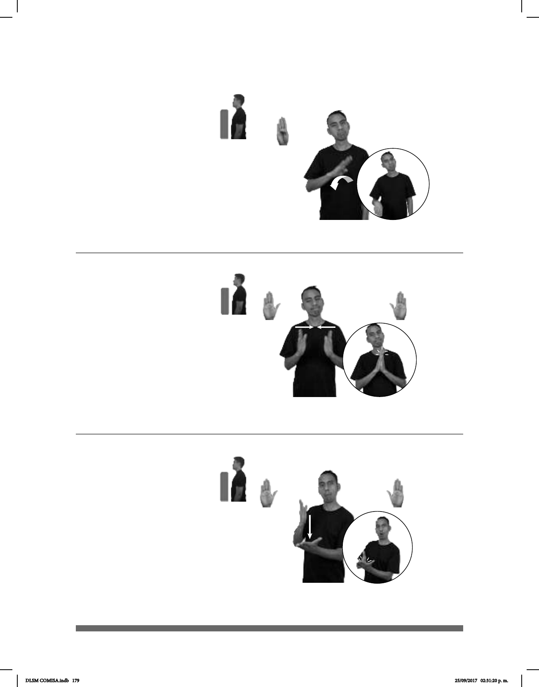

179
Seña: SM
B-P.1
Palma hacia abajo.
A la altura del pecho.
La MD se mueve
formando un arco hacia la derecha.
Cabeza
ladeada hacia la derecha, comisuras
de los labios hacia abajo.
Dejar de vivir una persona, un
animal, una planta o cualquier
organismo.
(B-P 205)
CINCO AÑOS pos-MI ABUELO pro-ÉL MORIR
Mi abuelo murió hace cinco años.
(B-P 206)
CINCO AÑOS pos-MI ABUELO pro-ÉL MORIR
Mi abuelo murió hace cinco años.
Seña: SS
B-P.2
Las palmas se
encuentran frente a frente.
A la altura del pecho.
Las manos se
encuentran y se tocan de frente.
Cabeza
ladeada hacia la derecha, labios
retraídos.
v. intr. Dejar de vivir
una persona, un animal, una planta
o cualquier organismo.
(B-P 207)
SEMÁFORO LUZ ROJA pro-YO PASAR AHORA MULTA pro-YO DEBER PAGAR.
Me pasé un semáforo, ahora tengo que pagar una multa.
Seña: SM
MD y MB B-P.2
MD palma hacia la
izquierda. MB palma hacia arriba.
A la altura del pecho.
MD sobre MB.
La MD golpea la MB
en línea recta.
sust. f. Pena en
dinero que se impone a quien ha
contravenido algún reglamento o
alguna ley o ha cometido algún
delito no muy grave.
DLSM COMISA.indb 179 25/09/2017 02:31:20 p. m.